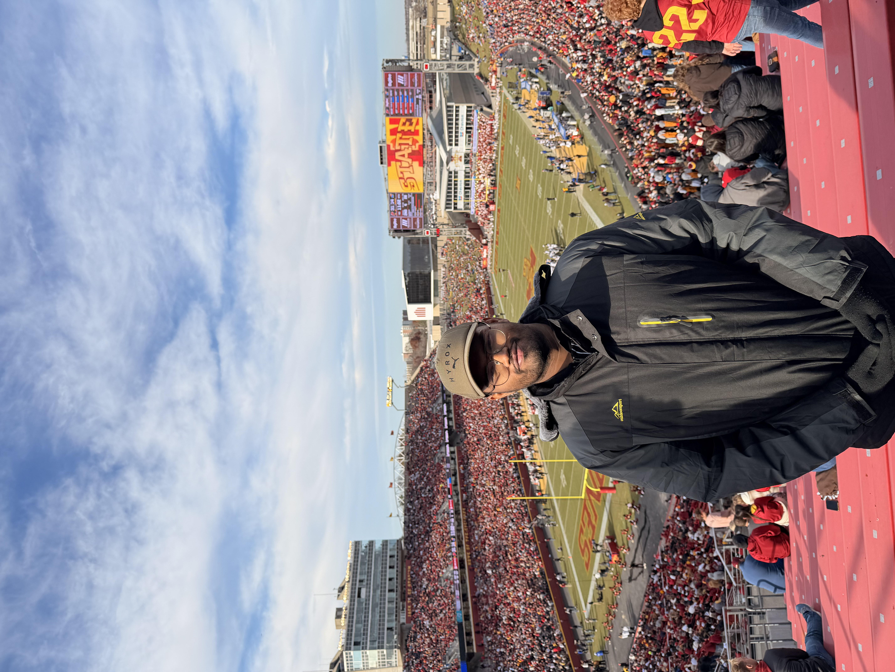
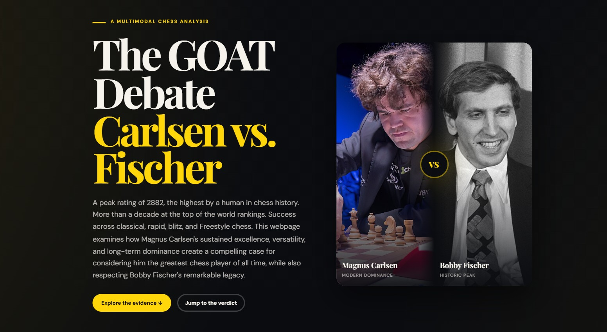

Welcome to my portfolio! I'm a Junior Computer Engineering student at Iowa State University (Class of 2027).
My academic focus is on firmware and embedded systems, with a strong interest in machine learning hardware and edge AI. I transferred to Iowa State from Nirma University in Ahmedabad, India, and I currently work part-time with the ISU Athletics Production Crew. I also hold Azure Cloud Computing and Power BI certifications from Wissenaire, IIT Bhubaneswar.

A multimodal chess analysis webpage created for ENGL 2500, exploring the debate over who deserves the title of greatest chess player of all time. The page compares Magnus Carlsen's sustained modern dominance with Bobby Fischer's historic peak, combining a bold visual layout with an evidence-based argument and clear calls to action for readers to explore the evidence or jump to the verdict.
You can reach me at ayaanmansuri1108@gmail.com